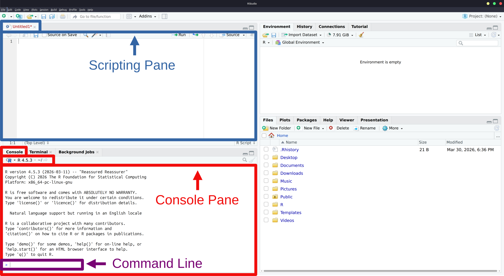
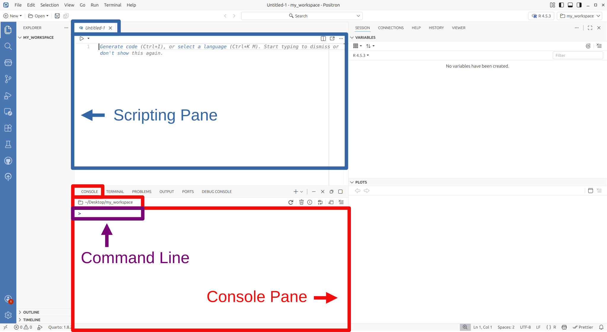

[1] 23 R Basics
CautionUnder Construction
What follows assumes you have installed either RStudio or Positron, though almost everything discussed also applies to the base R environment that comes with the language on Windows and Macintosh computers.
3.1 The Console Pane
When you launch the base-R environment (for Windows or Mac), launch RStudio, or launch Positron, somewhere on the screen will be a window pane labelled “Console”. Assuming you have not tweaked the default layout, all three environments will have this located on the left side (see the sections highlighted in red in Figure 3.1).


The console pane functions as a terminal for the R language specifically.1 Though, to distinguish it from your operating system’s main terminal it is labelled “console.”
Within the console pane, you should see a \(>\). This symbol denotes the command line’s prompt. In other words, it denotes the space in which you type commands, using R code, to your computer (this is the section highlighted in purple in Figure 3.1). The term “code” here is just a shorthand way of referring to “computer code” which is a more modern way of expressing the fact that we are typing commands using a programming language. The presence of \(>\) indicates that the computer is awaiting your command.
If you type 1 + 1 on the command line and then press “enter/return” on your keyboard, you should see a 2 display as an output almost instantaneously beneath it. In this case the expression 1 + 1 is a line of R code. Pressing enter/return, runs (or executes) this R code. The 2 is the computer’s resulting output.”
Input:
1 + 1Output:
If you close RStudio or Positron, you will find that any history of this calculation is gone when you re-open the environment. Consequently, typing commands into the console offers us a quick way to perform simple tasks that we are not necessarily concerned with preserving. However, in most cases we will be typing R code that we do want to preserve, run, edit, and add to at later date. This is where the concept of a script becomes important.
3.2 The Scripting Pane
A script is a text document where you can type, run, edit, and save your R code. To create a new script in RStudio, select the File menu in the top left corner, hover over New File, and choose R Script. In Positron, the process is identical except you select R File instead.
Once opened, you can type R code into this new pane and save it in the conventional manner of most word processing applications (i.e., File \(\rightarrow\) Save As). Additionally, this pane permits you to run lines of code selectively or all together. For instance, if you type the following into the script pane …
1 + 1
2 + 2
3 + 3You can now place your cursor at a line of your choosing and run that line individually. To do this in RStudio or Positron simply hold down the Control key on your keyboard and press Enter/Return. If you highlight all the lines of code, or just a subset of them, you can then run that highlighted section in a similar manner.
3.3 Keyboard Shortcuts
It is at this juncture that a noteworthy feature of programming environments be mentioned; specifically, keyboard shortcuts (also called “hotkeys”). All robust programming environments equip users with the ability to perform virtually any non-typing task directly from the keyboard, increasing efficiency and comfort.
For instance, if you are using the Windows operating system, holding down the “control” key and pressing the “s” key will save your script file (Ctrl + S). Learning the shortcuts for frequently used features, such as selecting and running lines of code, will make the process of writing code considerably more time efficient and effortless. In theory, a good programmer - using a competently developed coding environment - should never require the use of a mouse.
RStudio and Positron both offer a wide range of keyboard shortcuts that can be customized to user preferences. In RStudio, selecting Help \(\rightarrow\) Keyboard Shortcuts Help will display a list of existing shortcuts that users can avail themselves of. The same can be done in Positron by selecting File \(\rightarrow\) Preferences \(\rightarrow\) Keyboard Shortcuts.
Please note, it is not being suggested that you go out of your way to memorize all of these at once. The simple act of trying to use them consistently will be sufficient to learn them in an effortless manner. At the outset, it is to your advantage to merely select a few and attempt to use them consistently while you code. A few of the most useful ones are listed in Table 3.1. Many of these are not even exclusive to RStudio or Positron, but are just standard shortcuts in most operating systems.2
| Description | Windows/Linux | Macintosh |
|---|---|---|
| Run current line/section | Ctrl + Enter | Cmd + Return |
| Clear Console | Ctrl + L | Ctrl + L |
| Move to the beginning of a line | Home | Cmd + Left |
| Move to the end of a line | End | Cmd + Right |
| Move the cursor one word/block at a time | Ctrl + Left or Right | Option + Left or Right |
| Highlight all | Ctrl + A | Cmd + A |
| Highlight sections | Shift + Up, Down, Left, or Right | Shift + Up, Down, Left, or Right |
| Move cursor to script window | Ctrl + 1 | Ctrl + 1 |
| Move cursor to console window | Ctrl + 2 | Ctrl + 2 |
Type the <- operator |
Alt + - (minus) | Option + - (minus) |
Important
When utilizing the keyboard shortcuts mentioned in Section 3.3, it is worth remembering that standard QWERTY-style keyboards are symmetrically designed. Modifier keys like the shift key, control key, and alt key are located on both the left and right side of the board.3 This is not by accident and many people - even those who have grown up with unprecedented access to computers and the internet - have never learned to appreciate the utility of this layout or use it appropriately.
As an example, to type capital letters you should always depress the shift key on the opposite side of the keyboard to the letter. So, if you desired to type the capital letter Q, you would depress the right shift key with your right hand, and type Q with your left hand. A similar logic applies to the other modifier keys. As another example, to use the keyboard shortcut in row 9 of Table 3.1, you would depress the right control key (with your right hand) and use your left hand to press the 2 key. You should not be trying to press both keys with a single hand. Such advice might seem obvious but, given the sheer number of people who contort their wrists and fingers in grotesquely strange and painful ways, it is clearly far from being so.
3.4 How to Code Using R: Some Advice to Novice Programmers
With the formalities of installation, console, and scripting window behind us, we can now start learning to write (i.e., code) in R. But before we dive in, some advice for novice programmers is in order.
You don’t need to memorize anything in this section or any section of this text. R is a language, and like any language, consistent use will lead to natural, effortless memorization over time. To help accelerate this process, here are some basic recommendations:
- Type all code yourself. Resist the urge to copy and paste. The physical act of typing reinforces learning.
- Run every example in the textbook and try to reproduce the same results.
- If you do not know how to do some particular thing, then look up how to do it each time you need to do it. Memorization will happen effortlessly over time.
- Stay organized. This applies to both the code you write and the files you save.
- Commit to using R for all your statistics from now on. Immersion is the fastest path to fluency.
Everything discussed here is designed to acquaint you with the R language so that when you encounter R code, you will not be overwhelmed or intimidated. As you progress through the book, you will learn more advanced concepts and see much of this material revisited and re-explained in new contexts. Your goal in this chapter is not to become an R expert, it is to develop an intuitive grasp of R’s underlying syntax and logic.
3.5 Basic Arithmetic
At its core R is really nothing more than a powerful calculator, and we can use it as such. R can be used to add (\(+\)), subtract (\(-\)), multiply (\(\times\)), and divide (\(\div\)).
666 + 13
13 - 666
9 * 27
666 / 9[1] 679
[1] -653
[1] 243
[1] 74Exponents can be incorporated as well by using the \(^\wedge\) (“caret”), symbol. For instance, the expression \(9^3\) can be written as …
9^3[1] 729R will also follow the ritualistic order of operations when dealing with more complex expressions. To illustrate, consider the mathematical statement \(8\div2(2+2)\). Some people mistakenly believe that this expression is equal to \(1\), some believe it is equal to \(4\), and others believe that it is improperly written and there is no solution. In fact, it is equal to \(16\). As many will no doubt have learned in their primary education, according to order of operations (BEDMAS4), the order in which you divide and multiply inside the equation is not fixed, sometimes you divide first and sometimes you multiply first. However, what most people never learn is that the order you use is not up to you. You must always calculate from left to right when making a choice between multiplication and division. The same rule applies to addition and subtraction.
8/2*(2+2)[1] 16If we re-write the equation to be \(8\div(2+2)2\), you will see a corresponding change in the computer’s output.
8/(2+2)*2[1] 4R also has the ability to perform Euclidean Division, which many may recall from their long suffering days in primary education days as simply “division with a remainder.” For instance, consider \(11 \div 2\). Conventionally, you would want and expect an answer of \(5.5\), and R will produce that.
11/2[1] 5.5However, if we want to see the result expressed as a quotient and remainder (i.e., if we want to use Euclidean Division), we could obtain the quotient by typing …
11 %/% 2[1] 5To obtain the remainder we type…
11 %% 2[1] 1Thus, \(11\) can be split into \(2\) groups of \(5\), with \(1\) left over. More technically, the %% is what is known as the modulo operator and the remainder value of 1 that results from 11 %% 2 is known as the modulus.
Other, more complex, arithmetic operations are available in the R language; however, most of them will require the use of specialized lines of code called functions, which are discussed later.
Given that we are on the topic of basic arithmetic, it is perhaps worth considering what happens when you “break the rules” of basic arithmetic. Suppose we divide a positive and negative value by zero, what will happen?
1/0[1] Inf-1/0[1] -InfYou can see that R produces a result of Inf and -Inf which is an abbreviated way of referring to infinity (\(\infty\)) in the positive and negative directions respectively.5
What happens if you take the square root of a negative number?6
(-4)^(1/2)[1] NaNThe abbreviation NaN here stands for not a number, and is a fairly sensible output given that the square root of a negative number does not exist as a real number (it only exists in your imagination).
Finally, since its use crops up from time to time, it can be handy to know that R comes with the number \(\pi\) stored as a constant. To use it, you need only type pi.7
pi[1] 3.1415933.6 Scientific Notation
On occasion values will be either excessively large or excessively small. In such cases R will often display the values using what is referred to as scientific notation. For instance, dividing the number \(2\) by \(100000\) will result in scientific notation being employed:
2 / 100000[1] 2e-05Notice the e-05 in the output. This is how you know R is presenting a number using scientific notation. To interpret this in a conventional manner, imagine there is a decimal point after the \(2\), like so: 2.0e-05. Then just move that decimal point five digits to the left. In other words, 2e-05 is the same as writing 0.00002. Mathematically, 2e-05 translates to \(2 \times 10^{-5}\).
If the output were showing e+5, then you would move the decimal five digits to the right. For example, 2e+5 is the same as writing 200000. Notice there are five 0s; this is because, mathematically, 2e+5 means \(2 \times 10^5\)
Remember that positive powers move the decimal right (in the positive direction), and negative powers move the decimal left (in the negative direction).
3.7 Commenting Out Lines
In the course of writing R code, there will be occasions where you would like to run a script you have typed up, but not necessarily run every single line on that script. There might be certain lines that you would, at least tentatively, like to keep for one reason or another but not necessarily run. You can accomplish this by “commenting out” your code. If you type a # symbol, any code that follows that symbol and is on the same line as that symbol will not be run.
1 + 5
# 2 + 4
3 + 3
1 + 2 + 3 # + 4 + 5[1] 6
[1] 6
[1] 6This process is phrased “commenting out” because using the # is also frequently employed to write short helpful comments to yourself and other readers about your R script.
3.8 Creating Objects
A central feature of R is its ability to call objects in memory. For instance, we can define an object name, x, and have that name represent a number by typing a little arrow, <-, and following it with a value such as \(1\).
x <- 1You will find that running this line of code produces no corresponding output. However, if we now run x by itself the computer will display an output of \(1\).
x[1] 1If you look into how R actually stores what we have done in memory, the “object” in memory is the number \(1\). x is merely a name we are assigning to that object. However, a lot of R users are under the impression that the reverse is true - i.e., that we have in some sense created an object called x and stored something inside of it, but that is not actually the case. x is just a name binded to the object \(1\), and this object \(1\) is located somewhere inside your computer’s memory. Admittedly, unless you are doing some seriously advanced R programming, this is a distinction that will not matter to most R users, but it is important because it means that if you do something like this . . .
x <- 1
y <- 1x and y are technically different objects in the computer’s memory. However, if we did this ….
y <- xthey now represent the same object in memory. Moreover, altering one does not affect the other and just ends up creating two separate objects in memory. E.g. …
x <- x + 1
x
y[1] 2
[1] 1To see a complete list of objects presently loaded in memory have a look at the Environment window pane in R studio and the Variables pane in Positron.
3.9 Creating Objects (again)
To assign the names x and y we typed an arrow <-. However, we could have assigned the names using an equal sign = instead.
y = x + 4
y[1] 6Both <- and =, in the manner we are using them here, are what are referred to as assignment operators in that, they are used to perform the operation of assigning a name to an object. For most use cases, there is no practical difference between the two; except insofar as the arrow can be swapped around to assign values to objects like so.
10 -> z
z[1] 10The existence of both = and <- as assignment operators raises an obvious question: which is better to use? This is a question for which there are strong opinions. While code written using = tends to have an intuitive appeal and requires one less key to press, the <- has greater functionality and is generally preferred by R’s anointed high council (the overseers of Tidyverse) for that reason. If you opt to use <-, it is worth noting that RStudio and Positron contain a keyboard shortcut that offers a more ergonomic means of typing <- by pressing the alt key followed by a minus (-) sign.
NoteComparing Assignment Operators:
<- vs. =
⚡ Advanced note: New programmers can safely skip this section.
The original assignment operator of the S programming language was <-. The use of = to assign names to objects was a more recent development in S’s history. This was doubtlessly motivated by 1) the intuitive appeal of = (you are setting something equal to something else), 2) its cleaner look, 3) its correspondence with other modern programming languages, and 4) the basic fact that it requires one less keystroke. It also has the added benefit of not resulting in confusion when dealing with inequalities. For instance, something like x<-1 could be read as either assigning the name x to the object \(1\), or it could be evaluating whether \(x\) is less than \(-1\). As written here, the statement will result in the former unless appropriate spacing is applied; i.e., x < -1.
Despite the obvious benefits of using =, much of R’s core user-base favours <-. To understand why, it is helpful to know that, prior to its use as an assignment operator, the = was used to designate values to arguments inside a function and, to this day, it still serves this purpose. Consequently, when it was granted the coveted position of “assignment operator” it now had dual syntactic roles within the language but with a particular limitation: You cannot use = to both assign a value to a function’s argument and create a variable simultaneously. With <-, you can.
The Core Difference
Consider calculating the mean of the numbers one through five. Using = to set the argument works but creates no new variable:
mean(x = 1:5)[1] 3xError:
! object 'x' not foundUsing <- both sets the argument and stores the values:
mean(x <- 1:5)[1] 3x[1] 1 2 3 4 5The Uber-Assignment operator: <<-
The <- also has an advantage in that a simple variant of it, <<-, allows you to create variables within your own custom-made functions that are executable outside the scope of that function. Admittedly, this is a more advanced usage than readers of this text are likely to need, but it is an useful feature to know about as skills with R develop.
As a basic illustration, suppose we created a function, rational_pi(), that displays \(\pi\) to the nearest integer, \(3\), like so…
rational_pi = function() {
rat_pi <- 3
return(rat_pi)
}rational_pi() # Returns 3[1] 3rat_pi # ErrorError:
! object 'rat_pi' not foundAt face value this is odd behaviour because, to be able to run the line return(rat_pi), the object rat_pi must have been stored at some point. And it was stored, but only within the scope of the function. To make rat_pi available outside the function’s scope, we can employ <<- when we define the function:
rational_pi = function() {
rat_pi <<- 3
return(rat_pi)
}
rational_pi()
rat_pi[1] 3
[1] 3Now we have a “rational” version of \(\pi\) stored as rat_pi. However, one other intriguing feature of <<- needs to be mentioned in this context: <<- only assigns a value within the function’s scope, if the object you are creating does not already exist inside the function. However, the value will still get assigned globally (i.e., outside of the function’s scope). This is easiest to comprehend with a simple example:
rational_pi <- function() {
rat_pi <- 666 # Local assignment
rat_pi <<- 3 # Global assignment only
return(rat_pi) # Returns the local value
}
rational_pi() # Returns 666 (local value)
rat_pi # Returns 3 (global value)[1] 666
[1] 3Additional Advantages of <-
The <- operator offers two other minor advantages: reversibility (you can write -> and ->> to assign rightward) and consistency with R’s documentation, where most code examples use<-. For many R users, this familiarity makes code easier to parse at a glance.
3.10 Object Modes
Thus far all of the objects we have created have been numeric objects; though, we can avail ourselves of other types. For instance, another common object is the character object which gets defined using quotation marks on each end of the value.
x <- "SPAM"
x[1] "SPAM"Both single or double quotation marks can be used to define a character object. For instance, running …
y <- 'SPAM'
y[1] "SPAM"works just fine, but if you were to mix and match the two types of quotation marks (e.g., try to run y <- "SPAM'), you will find that no actual output is produced, and the console just displays the code you tried to run with a small + appended to it. The + indicates that the line of code is incomplete and more is expected before an output can be returned. If this happens in RStudio, you need only press the escape key esc with your cursor inside the console window. In Positron press Ctrl + c.
A core point about character objects, which will probably seem obvious, is that you cannot perform standard mathematical operations on them.
y * 5Error in `y * 5`:
! non-numeric argument to binary operatorAnother type of object is what is known as a logical object. This is an object that contains a value of TRUE or FALSE and is often referred to as a boolean object.
x <- TRUE
y <- FALSE
x[1] TRUEy[1] FALSEThe values TRUE and FALSE must be typed completely in uppercase without quotations for R to recognize them as a logical object. Alternatively, R does permit a shorthand version of each. Instead of typing TRUE and FALSE, you can type T and F respectively. Though, for ease of reading, using this shorthand version is not advised.
Thus far, we have demonstrated three basic categories of object: numeric, character, and logical. R refers to these various categories as modes,8 and as you progress with R, both in this book and more generally, you will encounter other object modes.
3.11 Naming Objects
Often we will run into circumstances where other people are required to read, run, and modify the code we write. Still other times, we may need to look at, and make sense of, code we have written in the past and largely forgotten. These considerations make it of the utmost importance that all of the code we write is intelligible to other people and our future selves. Among the best way to achieve this is by naming objects appropriately. Ideally, the name of an object should be concise and descriptive. Generally, you can name objects almost anything you like, as long as the name begins with a letter, contains no spaces, avoids special characters (except underscores _), and does not use any of R’s reserved words such as TRUE, Inf, NaN, function, etc.
Given that spaces are not permitted in the naming of objects, programmers have developed certain conventions to promote readability. One such convention is snake case, which separates lowercase lettered words with an underscore: snake_case <- 1.
Another, referred to as camel case, denotes separate words by capitalizing the first letter of each new word: camelCase <- 2
There is also period case: period.case <- 3.
There is random case (Wickham et al. 2023): Ra.nD0M_CAs.e <- 4
Finally, there is of course angry case for those moments when you need to communicate your frustration with coding: ANGRYCASE <- 5
Apart from the last two, R programmers tend to use all of these with seeming abandon. It is worth noting that different style guides for R have been developed and altered over the years with varying degrees of adoption. Presently there is no consensus on which style-guide should act in an official capacity for R; however, the most popular, and widely respected, is the Tidyverse Style Guide9 (https://style.tidyverse.org) which advocates the strict and concise use of snake_case only.
When it comes to naming objects, all of the rules just laid out only apply to what are referred to as syntactic names; however, if villainy is more your style, you can gleefully ignore all of those rules and conjure up what are called non-syntactic names by simply enclosing the name within backticks.
`420 * 69` <- "PARTY TIME!"
`The devil made me do it!` <- "Hail Satan"3.12 Vectors
It is not the case that an object need store only a single value, as we have been doing above. Particularly when conducting statistical analyses, you are almost always working with variables that contain more than one value (i.e. multiple observations). In view of this, R objects can store as many values as you require. For instance, if we want x to be equal to the numbers 1 through 5, we need only type:
x <- c(1, 2, 3, 4, 5)
x[1] 1 2 3 4 5The lower case c is short for combine. By combining the numbers \(1\) through \(5\) in this way we have created what is technically known as a vector.10 We can further use this combine function, c(), to combine vectors with other vectors. In the example below, we create two vectors, x and y, and combine them to create an object called z.
x <- c(1, 2, 3, 4, 5)
y <- c(6, 7, 8, 9, 10)
z <- c(x, y)
z [1] 1 2 3 4 5 6 7 8 9 10
TipHow to Use Your Colon Effectively
In the previous examples, we used R’s combine function to create a basic set of ascending numbers. The need to generate regular sequences of integers is a common occurrence in data analyses, so R provides users with a convenient means to create them using the colon operator (:).
x <- 1:5
x[1] 1 2 3 4 5This can also be used in reverse and with negative values.
3:-5[1] 3 2 1 0 -1 -2 -3 -4 -5The concept of a vector is one which will have relevance to people with a fondness of linear and matrix algebra,11 since it amounts to little more than a one-dimensional array/matrix. We can see how R handles vectors for these purposes by simply performing some mathematical operations on them. For instance, if we add a single number to our vector, we can see that R straightforwardly adds that number to each element (i.e. position) in the vector.
x
x + 2[1] 1 2 3 4 5
[1] 3 4 5 6 7Correspondingly:
x - 2
x * 2
x / 2
x^2[1] -1 0 1 2 3
[1] 2 4 6 8 10
[1] 0.5 1.0 1.5 2.0 2.5
[1] 1 4 9 16 25A similarly logical process is seen when we perform mathematical operations on two or more vectors of the same size. For instance, adding them together results in the first element of one being added to the first element of the other. The second element of one being added to the second element of the other, and so on.
x <- c(1,2,3,4,5)
y <- c(6,7,8,9,10)
x + y[1] 7 9 11 13 15However, a curious thing will occur if the vectors have an unequal number of elements greater than 1. Suppose, as an example, one vector has four elements and another has five and we want to add them together. In the process of adding the first element with the first element, and the second element with the second, and so on, R will automatically loop back around to the first element in the shorter vector to complete the calculation; though, it does this only after giving you a warning. Needless to say, you should not be performing any arithmetic on vectors of unequal lengths.
x <- c(1,2,3,4)
y <- c(6,7,8,9,10)
x + yWarning in x + y: longer object length is not a multiple of shorter object
length[1] 7 9 11 13 11Vectors are also not limited to numbers. They can also contain character values and logical values.
a <- c(1,2,3)
b <- c("BREAD", "SPAM", "BREAD")
c <- c(TRUE, FALSE, FALSE)
a
b
c[1] 1 2 3
[1] "BREAD" "SPAM" "BREAD"
[1] TRUE FALSE FALSEThough, you cannot mix and match. For instance, if you have a character string amongst a set of numeric values, those numeric values will all be converted to character strings as evidenced by the quotation marks in the output below.12
d <- c(5, "SPAM", 6, 7, 8)
d[1] "5" "SPAM" "6" "7" "8" If you have logical values amongst a set of numeric values, those logical values will be transformed such that TRUE = 1 and FALSE = 0, making the entire vector numeric.
e <- c(666, TRUE, FALSE)
e[1] 666 1 0In fact if you have an entire vector of logical values you can treat the TRUE and FALSE values as 1s and 0s respectively. This is a feature of logical vectors that frequently comes in handy.
x <- c(100)
g <- c(TRUE, TRUE, FALSE, FALSE, TRUE)
x + g[1] 101 101 100 100 101Similar to how R comes with \(\pi\) stored as a constant, it also has constants for a few commonly used character vectors. For more info about these
LETTERS [1] "A" "B" "C" "D" "E" "F" "G" "H" "I" "J" "K" "L" "M" "N" "O" "P" "Q" "R" "S"
[20] "T" "U" "V" "W" "X" "Y" "Z"letters [1] "a" "b" "c" "d" "e" "f" "g" "h" "i" "j" "k" "l" "m" "n" "o" "p" "q" "r" "s"
[20] "t" "u" "v" "w" "x" "y" "z"month.name [1] "January" "February" "March" "April" "May" "June"
[7] "July" "August" "September" "October" "November" "December" month.abb [1] "Jan" "Feb" "Mar" "Apr" "May" "Jun" "Jul" "Aug" "Sep" "Oct" "Nov" "Dec"Notice in the previous example’s output that the numbers within brackets indicate the position number of a element in the vector. For example, in the vector LETTERS, "T" is located at the 20th position. In the vector month.name, "July" is in the 7th position. Every new line written to the console screen gives the position number of the first element on the line - meaning that the size of your console screen will effect which position numbers get displayed (so you might have different values that what is shown above).
It is not by accident that these positions are demarcated using square brackets. Square brackets serve a special purpose in R. They allow us to subset values by referencing their position in the vector. For instance, if we want to know what the 17th letter of the English alphabet is, we need only type …
LETTERS[17][1] "Q"If we want to list out the first 5 letters we can simply insert a numeric vector…
LETTERS[c(1, 2, 3, 4, 5)]
# or equivalently
LETTERS[1:5][1] "A" "B" "C" "D" "E"
[1] "A" "B" "C" "D" "E"By contrast, if we want to list out all of the letters, except the first five (i.e., exclude the first five), we can include a minus sign in front of the combine symbol.
LETTERS[-c(1, 2, 3, 4, 5)]
# or equivalently
LETTERS[-1:-5] [1] "F" "G" "H" "I" "J" "K" "L" "M" "N" "O" "P" "Q" "R" "S" "T" "U" "V" "W" "X"
[20] "Y" "Z"
[1] "F" "G" "H" "I" "J" "K" "L" "M" "N" "O" "P" "Q" "R" "S" "T" "U" "V" "W" "X"
[20] "Y" "Z"The use of vectors inside the indexing brackets allows us to select any position we want. For instance, if we wanted to examine the 2nd, 3rd, 5th, 7th, 11th, 13th, 17th, 19th, and 23rd numbers (all prime numbers), we can create a vector of those values and simply insert it into the index.
primes <- c(2, 3, 5, 7, 11, 13, 17, 19, 23)
LETTERS[primes][1] "B" "C" "E" "G" "K" "M" "Q" "S" "W"Somewhat uniquely, within the R programming language every single basic data object—such as a number, character string, or logical value—is inherently a vector. For example, the number 666 is a vector, the character string "SPAM" is a vector, and the logical value FALSE is also a vector. These are simply vectors with a single element, or a length of 1. As such, all of these can be indexed just like any other vector with a length greater than 1.
666[1]
666[2]
"SPAM"[1]
FALSE[1][1] 666
[1] NA
[1] "SPAM"
[1] FALSENotice in the second line, when 666 was indexed at position 2, R returned NA because no value exists at that position. The moral of the story is that, when the combine function,c(), is used, you are not creating a vector, but rather combining vectors.
3.13 Operators And Comparison Statements
Symbols in R such as <-, +, -, and so on are referred to as operators because they are used to perform “operations” such as assigning a name to an object, adding numbers together, etc. Table Table 3.2 shows a list of some common operators in R that we have seen before and some new ones called relational operator. These are operators that evaluate a comparison of some kind. For instance, you can evaluate whether one value is greater than or less than another value.
3 > pi
3 < pi[1] FALSE
[1] TRUEIn the above example, the statement “three is greater than \(\pi\)”, is a false statement. By contrast, the statement “three is less than \(\pi\)”, is a true statement.
| Type | Operator | Description |
|---|---|---|
| Assignment | x <- value |
Assign a value to a name. |
value -> x |
Assign a value to a name (rightward). | |
x = value |
Assign a value to a name. | |
| Arithmetic | x + y |
Addition |
x - y |
Subtraction | |
x * y |
Multiplication | |
x / y |
Division | |
x^y |
Exponentiation | |
x %% y |
Modulo (remainder after division) | |
x %/% y |
Integer division (quotient without remainder) | |
| Relational | x < y |
Less than |
x > y |
Greater than | |
x <= y |
Less than or equal to | |
x >= y |
Greater than or equal to | |
x == y |
Equal to | |
x != y |
Not equal to |
In a similar fashion, you can also evaluate whether a value is greater than or equal to some other value or less than OR equal to some value. For example:
pi >= pi
pi <= pi[1] TRUE
[1] TRUEYou can also evaluate whether two values are equivalent or not equivalent, by using the symbols == and != respectively.
pi == pi # testing if equivalent
pi == (22/7)
pi != (22/7) # testing if NOT (!) equivalent[1] TRUE
[1] FALSE
[1] TRUE3.14 Functions
In conventional mathematics a function is a way of relating an input to an output (Pierce 2022). Typically this is notated as
\[ f(\text{input}) = \text{output} \tag{3.1}\]
When you place something inside the left parentheses, there is a corresponding output. The use of \(f\) here to denote the function is just a formality mathematicians have adopted. A function can be named or symbolized with anything.
As an example of a function’s use, we could create one that outputs the square root of a number.
\[ f(x) = \sqrt{x} \tag{3.2}\]
In this case, \(x\) is just acting as a place holder; thus, swapping the \(x\) inside of \(f()\) with a real number will give us a corresponding output by taking the square root of that number. For example, if we insert the number 25 into the function:
\[ \begin{align} f(25) &= \sqrt{25} \\ &= 5 \end{align} \tag{3.3}\]
Functions in R work identically to this. For instance, R has a function for finding the square root of a number, except instead of naming the function \(f(x)\), it names the function sqrt(x).
sqrt(25)[1] 5And, rather conveniently, R will also store the output of a function as an object if you ask it to.
x <- sqrt(25)
x[1] 5As you might expect, given its lineage as a tool for data analysis, R has many such functions. Examples of some of the more common, self-explanatory ones can be seen below. For each we will insert a vector containing the values one through five.13
x <- c(1, 2, 3, 4, 5)# Calculating the sum of all the values:
sum(x)[1] 15#Calculating the product of all the values:
prod(x)[1] 120# Calculating the minimum and maximum of all the values:
min(x)
max(x)[1] 1
[1] 5# Calculating the length (i.e., number of elements) of a vector:
length(x)[1] 5# Calculating the mean of all the values:
mean(x)[1] 3# Calculating the median of all the values:
median(x)[1] 3Functions are not limited to just mathematical processes either. For instance, R has a function to tell us what an object’s mode is, thus allowing us to determine if the vector consists of numeric, character, or logical values.14
mode(x)[1] "numeric"This is technically a lie. RStudio and Positron give you the ability to toggle between both R and Python.↩︎
Shortcuts 3, 4, and 5 can be combined with shortcut 7 to highlight bigger sections of code.↩︎
If this isn’t true of your keyboard, it’s time to get a better keyboard.↩︎
“BEDMAS” of course being the famous mnemonic to help memorize the order of operations: Brackets, Exponents, Division, Multiplication, Addition, and Subtraction. Many non-Canadian readers may be more familiar with the inferior variants of this mnemonic, PEDMAS and PEMDAS.↩︎
This will also be generated if a number is too large for a computer to cope with. For example, the code
.Machine$double.xmaxwill produce the largest number your computer can handle. R will technically still let you add values to this number, but the number won’t appear to change because the amount you would have to add to alter what is shown is excessively large. However, if you multiply it by \(2\), you should getInf.↩︎Recall that exponents can be used to take the square-root of a number. For example, \(\sqrt{4}\) can be expressed as \(4^\frac{1}{2}\).↩︎
If you find \(\pi\) displayed to seven digits inadequate, you may want to talk to a professionally licensed therapist. Alternatively, you can display more digits by running the code
print(pi, digits = 16). Values exceeding \(16\) digits will be inaccurate given the limitations of 64-bit computers, so it is advisable not to go beyond \(16\) even though a max of \(22\) are possible. If you want R to always display all \(16\) digits, you can change its default behaviour by runningoptions(digits = 16), though this is not recommended.↩︎You may sometimes hear these referred to as object “classes” as well. The distinction between modes and classes in R is nuanced, with considerable overlap between the two terms; though, they are not perfectly equivalent. I have chosen to refer to object modes because it more consistently categorizes objects as numeric, character, or logical, which I believe is helpful for beginners learning R.↩︎
The tidyverse will be explained in the next chapter, just know that all the code written in this book will (do its best) to adhere to its standards.↩︎
More specifically, we are speaking of atomic vectors here, though most people just call them vectors.↩︎
While I assume such people must exist, their existence is about as well-confirmed as that of the Sasquatch.↩︎
You can also check the vector’s mode by running
mode(d).↩︎It’s perhaps worth pointing out that the small
cwe use to combine values into a vector is also a function, which is why it is always followed with parentheses,c().↩︎Do not confuse this with the mathematical concept of a modal value; i.e., the number that appears most often.↩︎